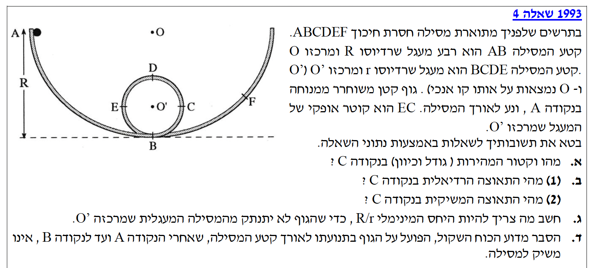
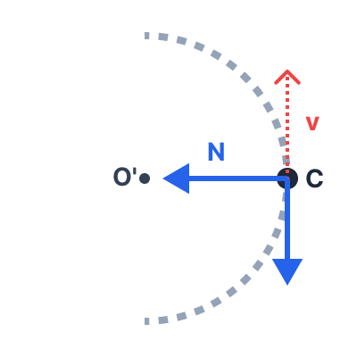
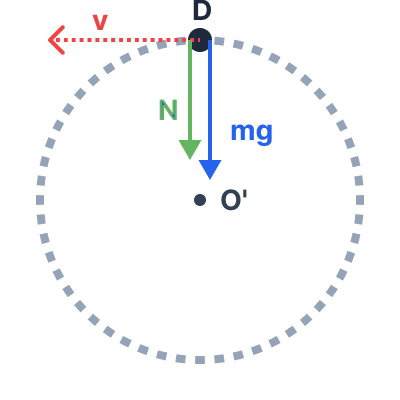
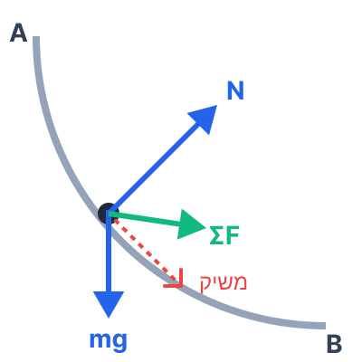

הגוף משוחרר ממנוחה בנקודה A, לכן מהירותו ההתחלתית היא \( v_A = 0 \). המסילה חלקה לחלוטין (אין כוחות לא משמרים שמבצעים עבודה). נגדיר את מישור הייחוס לאנרגיה פוטנציאלית כובדית בנקודה הנמוכה ביותר במסלול, נקודה B (\( h_B = 0 \)).
לפיכך, הגובה בנקודה A הוא הרדיוס של המסילה הגדולה: \( h_A = R \).
נקודה C נמצאת בקצה הקוטר האופקי של המסילה המעגלית הקטנה, לכן גובהה ביחס ל-B הוא הרדיוס של המעגל הקטן: \( h_C = r \).
את גודלו וכיוונו של וקטור המהירות בנקודה C, כלומר את \( v_C \).
מכיוון שהמסילה חלקה, עבודת הכוחות הלא משמרים (רק הנורמל פועל ככוח לא משמר, ועבודתו אפס כי הוא תמיד מאונך לכיוון התנועה) היא אפס. לכן, מתקיים שימור אנרגיה מכנית בין הנקודות A ו-C:
נציב את הנתונים שלנו:
נצמצם במסה \( m \) ונסדר את המשוואה למציאת המהירות:
כיוון המהירות בנקודה C: על פי העיקרון הקינמטי, כיוון המהירות תמיד משיק למסלול. מכיוון שהגוף מגיע מלמטה ועולה לאורך המעגל, ונקודה C נמצאת בדיוק בקצה הקוטר האופקי, המשיק למעגל בנקודה זו הוא מאונך לחלוטין (אנכי). לכן כיוון המהירות הוא כלפי מעלה.
מהסעיף הקודם אנו יודעים את ריבוע המהירות בנקודה C: \( v_C^2 = 2g(R - r) \). רדיוס מסלול התנועה הנוכחי (המעגל הקטן) הוא \( r \).
הכוחות הפועלים על הגוף בנקודה C הם: כוח הכבידה (\( mg \)) הפועל אנכית כלפי מטה, והכוח הנורמלי (\( N \)) הפועל אופקית שמאלה, אל עבר מרכז המעגל \( O' \).

את התאוצה הרדיאלית \( a_R \) (תת-סעיף 1) ואת התאוצה המשיקית \( a_T \) (תת-סעיף 2) בנקודה זו.
חלק (1) - תאוצה רדיאלית:
נציב את ביטוי המהירות שמצאנו אל תוך נוסחת התאוצה הרדיאלית:
תאוצה זו מכוונת תמיד אל עבר מרכז המעגל, שזה במקרה שלנו אופקית ושמאלה (לכיוון נקודה \( O' \)).
חלק (2) - תאוצה משיקית:
הציר המשיקי בנקודה C הוא הציר האנכי (כיוון המהירות). נפעיל את החוק השני של ניוטון בציר זה.
נסמן את הכיוון מטה ככיוון החיובי. הכוח היחיד שפועל בציר זה הוא כוח הכבידה \( mg \):
התאוצה היא בגודל תאוצת הכובד \( g \), וכיוונה כלפי מטה (בניגוד לכיוון המהירות, לכן גודל המהירות קטן בנקודה זו).
כדי שהגוף לא ינותק מהמסילה המעגלית, הוא חייב להשלים את הלולאה. הנקודה המאתגרת ביותר להשלמת הלולאה היא הנקודה הגבוהה ביותר במסלול (נסמנה באות D). גובה הנקודה D ביחס לנקודה B הוא \( h_D = 2r \).
תנאי לאי-ניתוק הוא שהגוף יפעיל כוח לחיצה על המסילה, כלומר הכוח הנורמלי בנקודה D חייב להיות גדול או שווה לאפס: \( N_D \ge 0 \).

את היחס המינימלי \( R/r \) המבטיח שהגוף לא יתנתק בנקודה D.
ננתח את הכוחות בנקודה D (שיא הלולאה) בציר הרדיאלי הפונה כלפי מרכז המעגל מטה. גם הנורמל וגם משיכת כדור הארץ פועלים מטה:
במצב הגבולי (סף ניתוק), הגוף כמעט לא לוחץ על המסילה, כלומר \( N_D \to 0 \). נציב זאת כדי למצוא את המהירות המינימלית הנדרשת בנקודה D:
כעת, נפעיל שוב את חוק שימור האנרגיה בין נקודת ההתחלה A לבין הנקודה D:
נציב את הביטוי לריבוע המהירות המינימלית שמצאנו (\( v_{D_{\text{min}}}^2 = gr \)):
נחלק את שני אגפי המשוואה בביטוי החיובי \( mgr \) ונקבל:
הגוף מחליק לאורך קטע המסילה AB, שהוא מעגל ברדיוס R. המהירות ההתחלתית ב-A היא אפס, וגודלה הולך וגדל עד לנקודה B.

להסביר מדוע וקטור הכוח השקול הפועל על הגוף (מנקודה A, רגע אחרי השחרור, ועד לנקודה B) לא יכול להיות בכיוון המשיק למסילה.
הכוח השקול על הגוף הוא הסכום הווקטורי של כוח הכבידה (\( mg \)) והכוח הנורמלי (\( N \)).
הגוף נע לאורך מסלול עקום (קשת של מעגל). בתנועה לאורך מסלול עקום, כיוון וקטור המהירות משתנה מרגע לרגע. מקינמטיקה אנו יודעים ששינוי בכיוון המהירות מחייב קיומה של תאוצה רדיאלית, שגודלה עומד ביחס ישר לריבוע המהירות: \( a_R = v^2/R \).
התאוצה הרדיאלית מכוונת תמיד פנימה אל מרכז המעגל (בניצב לכיוון המשיק). לכן, לפי החוק השני של ניוטון (\( \Sigma F = ma \)), חייב לפעול על הגוף כוח שקול שיש לו רכיב רדיאלי השונה מאפס.
מכיוון שהכוח השקול מכיל רכיב רדיאלי (המאונך למשיק), הווקטור השלם של הכוח השקול אינו יכול להיות מכוון אך ורק לאורך קו המשיק.